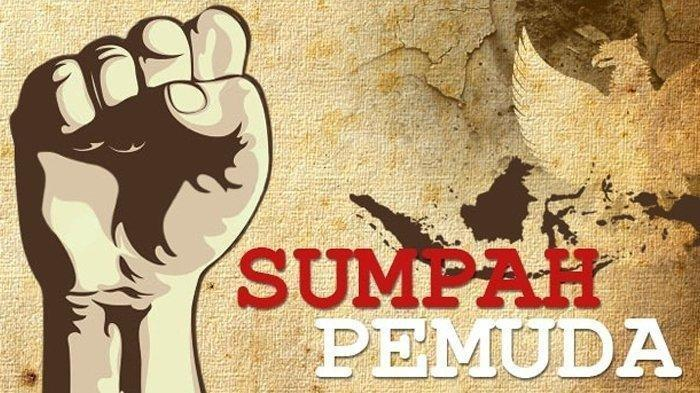

SUMPAH PEMUDA

Sumpah Pemuda adalah satu tonggak utama dalam sejarah pergerakan kemerdekaan Indonesia. Ikrar ini dianggap sebagai kristalisasi semangat untuk menegaskan cita-cita berdirinya negara Indonesia.
Apa itu sumpah pemuda?
Sumpah Pemuda merupakan ikrar kebangsaan yang dirumuskan melalui sebuah putusan Kongres Pemuda Kedua di Jakarta pada 27-28 Oktober 1928.
Ikrar ini adalah pernyataan kebangsaan pemuda pemuda Indonesia dari berbagai latar belakang daerah, suku, dan agama, menyatukan keyakinan mereka bahwa tumpah darah, bangsa, dan bahasa persatuan: ialah Indonesia. Keyakinan itu lalu disebarluaskan untuk dijadikan asas bagi semua perkumpulan kebangsaan Indonesia setelah peristiwa Kongres Pemuda Kedua.
Kongres pemuda pertama
“Perceraiberaian itu wajiblah diperangi, agar kita bisa bersatu” (Sambutan Sugondo Djojopuspto dalam pembukaan kongres)
Rapat pertama, malam hari Sabtu, 27 Oktober 1928, di Gedung Katholieke Jongenlingen Bond (KJB), Ketua Kongres, Sugondo Djojopuspito, memberi sambutan. Ia berharap kongres ini dapat memperkuat semangat persatuan dalam sanubari para pemuda. Acara dilanjutkan dengan uraian Mohammad Yamin tentang arti dan hubungan persatuan dengan pemuda. Menurutnya, ada lima faktor yang bisa memperkuat persatuan Indonesia yaitu sejarah, bahasa, hukum adat, pendidikan, dan kemauan.

Kongres pemuda kedua
Kongres Pemuda Kedua digagas oleh Perhimpunan Pelajar Pelajar Indonesia (PPPI), sebuah organisasi pemuda yang beranggotakan pelajar dari seluruh Indonesia. Kongres ini bertujuan untuk memperkuat rasa persatuan dan kebangsaan Indonesia yang telah tumbuh di dalam benak dan sanubari pemuda-pemudi.
Sebelum kongres digelar, para pemuda mengadakan pertemuan terlebih dahulu pada 3 Mei 1928 dan 12 Agustus 1928. Mereka membahas tentang pembentukan panitia, susunan acara kongres, waktu, tempat, dan biaya. Kemudian pertemuan itu menyepakati bahwa Kongres Pemuda Kedua akan diselenggarakan pada 27-28 Oktober 1928 di tiga lokasi berbeda, yaitu gedung Katholieke Jongenlingen Bond, Oost Java Bioscoop, dan Indonesische Clubgebouw (Rumah Indekos, Kramat No. 106).

Kongres pemuda ketiga
“Pramuka tanpa semangat kebangsaan bukanlah Pramuka…” (Theo Pangemanan)
Rapat ketiga, sore hari, Minggu, 28 Oktober 1928, Soenario menjelaskan pentingnya nasionalisme dan demokrasi selain gerakan kepanduan. Kemudian Ramelan mengemukakan tentang gerakan kepanduan yang tidak bisa dipisahkan dari pergerakan nasional. Gerakan kepanduan sejak dini mendidik anak-anak disiplin dan mandiri, hal-hal yang dibutuhkan dalam perjuangan. Theo Pengamanan menyampaikan bahwa pandu sejati adalah pandu berdasarkan semangat kebangsaan dan rasa cinta tanah air Indonesia.
Sebelum kongres ditutup diperdengarkan lagu “Indonesia Raya” oleh Wage Rudolf Supratman melalui lantunan biola. Lagu tersebut disambut dengan sangat antusias oleh peserta kongres. Kemudian kongres ditutup dengan pembacaan sebuah keputusan oleh Sugondo Djojopuspito. Keputusan ini dirumuskan oleh Mohammad Yamin.

bagaimana isi sumpah pemuda
Pertama: "Kami putra dan putri Indonesia, mengaku bertumpah darah yang satu, tanah air Indonesia". Kedua: "Kami putra dan putri Indonesia mengaku berbangsa yang satu, bangsa Indonesia". Ketiga: "Kami putra dan putri Indonesia menjunjung bahasa persatuan, bahasa Indonesia".